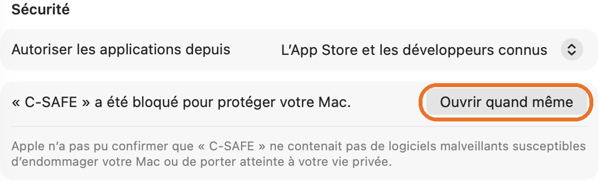
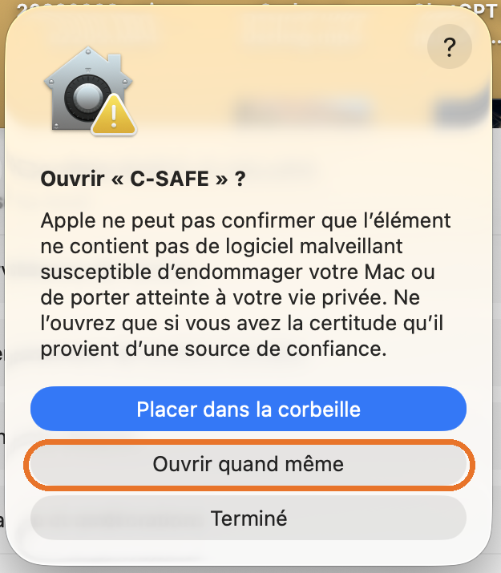

C-SAFE n'est pas distribuée sur l'App Store : macOS va donc te demander une
fois de confirmer que tu lui fais confiance. C'est normal, ça prend 2 minutes et il n'y a rien à désactiver
sur ton Mac. Suis les étapes dans l'ordre.
1
Ouvre le fichier C-SAFE.dmg
Double-clique sur C-SAFE.dmg (pièce jointe du mail). Cette fenêtre s'ouvre :
C-SAFE

C-SAFE
→
Installer C-SAFE
(à lire).pdf
2
Glisse C-SAFE sur le dossier Applications
Attrape l'icône C-SAFE et lâche-la sur Applications. Ensuite, éjecte le disque « C-SAFE »
(clic droit › Éjecter). Ne lance pas l'app depuis le .dmg, toujours depuis Applications.
3
Lance C-SAFE une première fois, puis clique « Terminé »
Dans le dossier Applications, double-clique sur C-SAFE. macOS la bloque avec ce message.
Clique Terminé, surtout pas « Placer dans la corbeille ».
!
« C-SAFE » n'a pas été ouvert
Apple n'a pas pu confirmer que « C-SAFE » ne contenait pas de logiciel malveillant susceptible d'endommager votre Mac ou de porter atteinte à votre vie privée.
TerminéPlacer dans la corbeille 4
Réglages Système › Confidentialité et sécurité
Ouvre le menu › Réglages Système… › Confidentialité et sécurité. Descends jusqu'à la rubrique
Sécurité et clique Ouvrir quand même en face de C-SAFE :

Le bouton reste affiché environ une heure après l'étape 3. S'il n'y est plus, refais l'étape 3.
5
Confirme : « Ouvrir quand même »
macOS repose la question une dernière fois. Clique Ouvrir quand même, puis valide avec
ton mot de passe du Mac ou Touch ID.
C'est fini : à partir de maintenant, C-SAFE s'ouvre normalement, comme n'importe quelle app.
✅ Ce message est normal pour toute app hors App Store qui n'est pas signée par
un développeur payant chez Apple. Il ne veut pas dire que l'app est dangereuse.

6
Au premier branchement de carte : « Autoriser »
Quand tu insères ta première carte, macOS demande si C-SAFE peut lire les volumes amovibles (cartes
et disques). Clique Autoriser, sinon C-SAFE ne verra ni tes cartes ni tes disques.
« C-SAFE » souhaite accéder aux fichiers d'un volume amovible.
Vous pourrez modifier ce réglage plus tard dans Confidentialité et sécurité.
Ne pas autoriserAutoriser 🔒 Pourquoi c'est sûr
• L'app est fabriquée automatiquement à partir de son code source, par les serveurs de GitHub. Personne ne la modifie à la main.
• Chaque version est testée avant d'être publiée : copie de 2 Go, vérification MD5, mémoire et doublons.
• L'app est signée, et sa signature est contrôlée dans le .dmg. Si le fichier était abîmé ou modifié pendant l'envoi, macOS refuserait de l'ouvrir.
• Tu ne désactives aucune protection du Mac (Gatekeeper reste activé). Tu donnes ton accord pour cette app seulement.
• C-SAFE n'envoie rien sur Internet. Elle lit tes cartes et écrit sur les disques que tu choisis, rien d'autre.
🧾 Vérifier le fichier (facultatif, pour les plus pointilleux)
Dans l'app Terminal, tape la commande suivante, puis glisse C-SAFE.dmg dans la fenêtre et appuie sur Entrée :
shasum -a 256
Le code obtenu doit être identique à l'« empreinte SHA-256 » indiquée dans le mail ou sur la page de la version.
🛟 En cas de souci
• « C-SAFE est endommagée » : supprime-la des Applications, télécharge à nouveau le .dmg et recommence.
• Pas de bouton « Ouvrir quand même » : relance C-SAFE (étape 3), puis retourne dans les Réglages.
• Mise à jour : même chose avec le nouveau .dmg. Glisse-le dans Applications, puis « Remplacer ».
Il faudra peut-être refaire les étapes 3 à 5 une fois.
• Toujours bloqué ? En dernier recours, dans Terminal, retire le marquage « téléchargé d'Internet » de l'app seulement :
xattr -dr com.apple.quarantine /Applications/C-SAFE.app
⚠️ La règle d'or : ne formate jamais une carte tant que C-SAFE n'a pas affiché
« copié et vérifié sur tous les disques ». Si un dossier finit par _INCOMPLET, la copie n'est pas bonne : garde la carte et recommence.